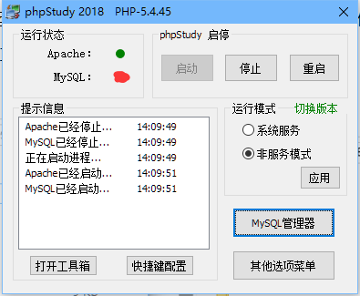
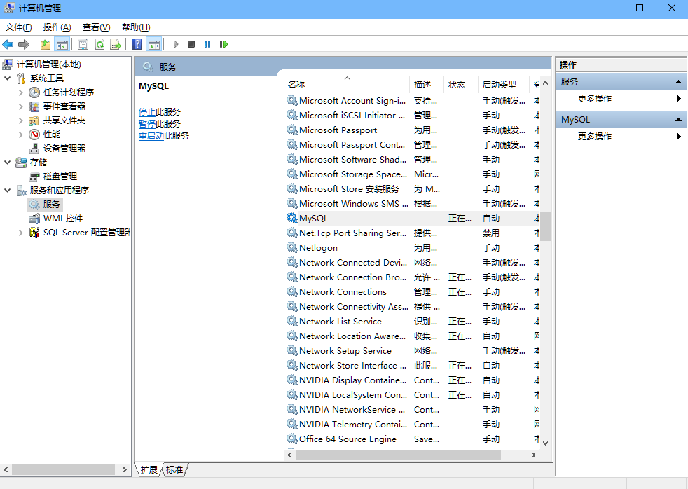
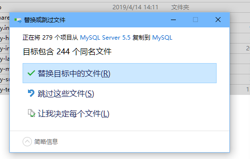
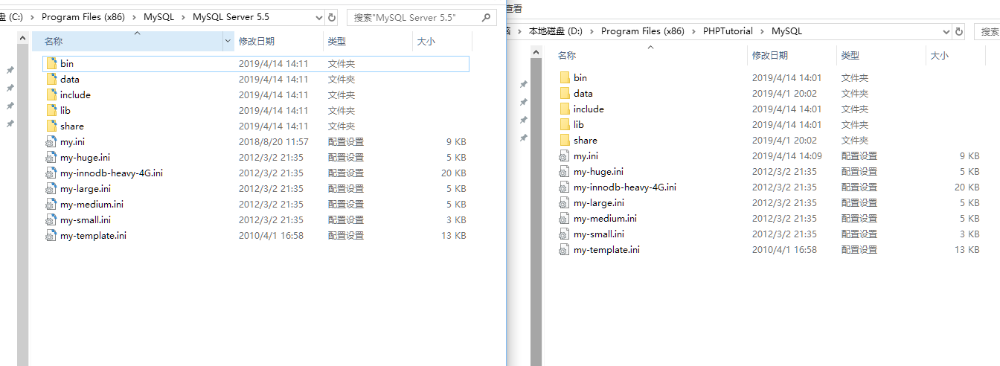
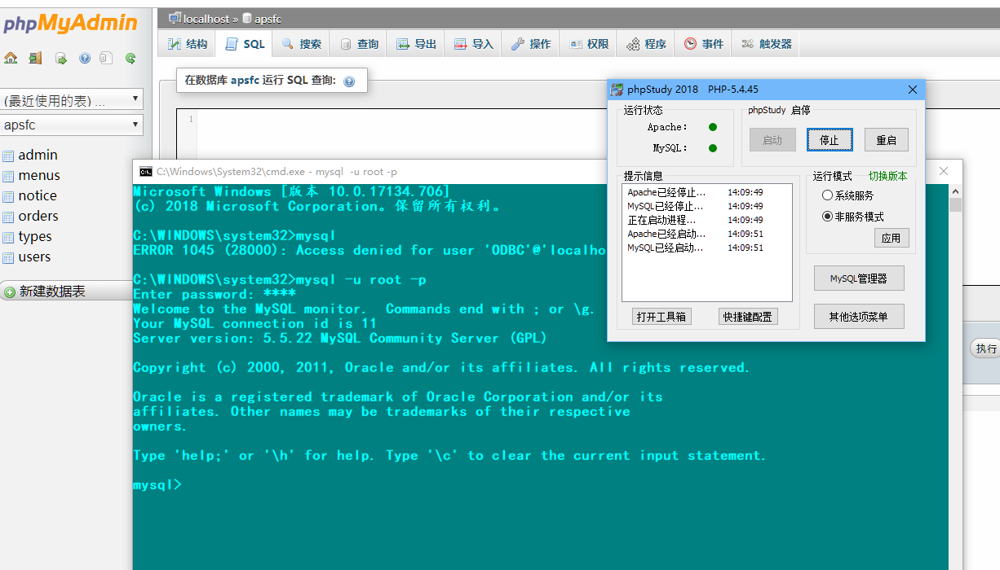

今天学习php，当然是要先安装好运行环境了，phpstyudy是一个运行php的集成环境， 一键安装对新手很友好，与时作为一个新手，便跟着教程安装了phpstudy集成环境。
很快安装好了，嗯。对新手确实很友好。phpmyadmin，Apache，php直接配置安装好了。省去了很多时间。
可是安装后却遇到一个麻烦事，就是这个Mysql启动后就会过几秒就显示Mysql已经停止（这个是我现在的我已经解决这个问题了，应该是个红色的方框，不要介意，/嘿嘿）。重启了很多遍。还是无法启动。

这个时候不仅phpstudy里的mysql无法启动，我原来的mysql也不能启动了。这可怎么办我原来的还有很多数据。
于是便去网上查找phpstudy和mysql冲突的问题， 哦原来是 这两个mysql都占用的是3306端口， 而系统原来的mysql会开机启动（就是这里，会让原来的mysql作为服务开机启动监听）。那么当你打开phpstudy的时候， 便会再启动一个mysql服务，这个时候因为是同一个端口的关系，那就冲突了。

网上确实有人和我一样遇到了这个问题，无非就是把原来的mysql删掉，或者修改配置文件的方式，显然这样解决并不是我想要的。
于是我想这样解决试试吧。把phpstudy里的mysql端口改为3307是不是就不冲突了，我改了，理论上来说是可以成功了，可是依然是原来那个样子。算了太麻烦了。换个方法吧！
这个时候我想把phpstudy里的mysql卸载了吧， 可是有没有找到phpstudy里设置mysql路径的设置。这个方案便行不通另想方案。
于是那，我便想到把安装好的mysql移动到phpstudy的mysql目录下，把原来mysql所在位置的文件全部删除，这样是不是就可以让phpstudy使用原来的mysql数据库了，这样我又尝试了，还是没能解决问题。因为就算这样移动了mysql运行文件配置文件数据文件，上面那个计算机管理里面的服务还是在启动原来位置的mysql服务，而且这个mysql服务指定的mysql服务文件路径无法修改。这个方案便行不通！
我们再来换个思路。这次我把原来的mysql目录删除的文件全部恢复，这下原来的mysql和phpstudy的mysql文件夹的便有相同的内容，如下图：
移动时选择全部替换。


最后再来个成功截图，耶~~~

这个时候问题就完美的解决了，既能保留原来的数据，实现两个mysql共存，操作又无需修改配置文件，只要ctrl+c ctr+v就解决问题了。
本人水平有限如有问题欢迎指正。
有什么问题也可以到下方评论，我看到后还帮忙解决！